Hosting
How this website is hosted.
Intro
This is an explanation of how this webpage is hosted. It is running on a Raspberry pie through a Cisco ASA and uses dynamic DNS through google. This is a long tutorial and some parts will have links to Youtube tutorials that I followed in order to get this to work. I appologize in advance if some parts may be missing, unclear or if the relevent information has changed over time. If you have any questions feel free to contact me in the "How to reach me" section.
Disclaimer
This is a short explanation of how I created this website using tutorials over multiple Youtube videos and knowledge acquired from studying for my CCNA Exams. Be aware that there are risks when allowing people to access any device on your network from the internet. I am not responsable/liable for anything that may happen to your Raspberry Pi or other devices on your network. This is intended solely for educational purposes. Now lets get Rolan.
Required Materials
Setting up your Raspberry Pi.
There are many tutorials accross Youtube which will show you how to set up an OS on your Raspberry Pi. At the time of writing this I am currently using "Raspian Buster with desktop". If you are more familiar with Linux command line interface I recomend you use the "Lite" version because it is less resource intensive on your device. However for this tutorial I use the desktop version because it is a bit more user friendly and should work just as well.
Setting up your ASA.
Connect serial cable to console port Open and putty and select SERIAL. leave the speed at 9600 and then chose your serial line. (This will vary from person to person and can be checked through device manager)
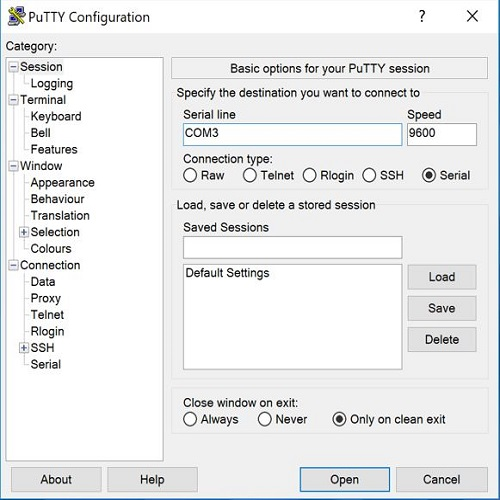Once in the ASA console type “enable” or “en” for short. You should then be prompted to enter a password. If this is your first time, then there should be no password and instead you can just press enter.
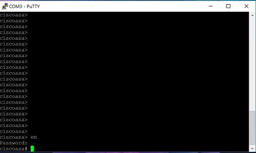You will now be in enable mode/Exec mode. You can tell because the > symbol after the host name has changed to #. To enter global configuration you will now by type “configure terminal” or you can shorten it to something like “con t”. (Note: My ASA came with factory defaults which set vlan1 to the 192 private address with DHCP enabled. You must remove DHCP first before you can assign any other ip address to the VLAN)
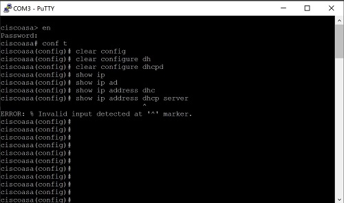Then you will want to assign an interface to VLAN 1 and make sure the interface is on.
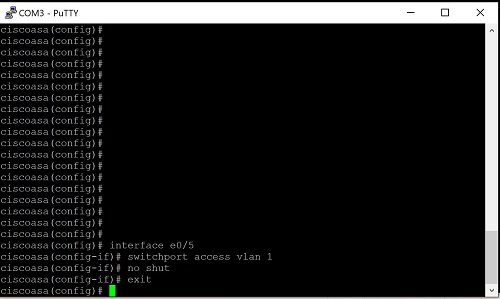Next we will want to configure VLAN 1 for the inside with a security level of 100 and an ip address. In this case I used 10.0.0.0/24
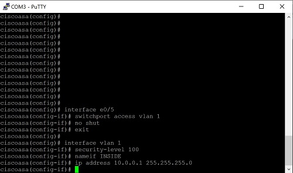To communicate with the ASDM we need to enable http services and then let the ASA know which IP addresses are allowed to have ASDM sessions.
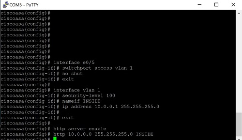For the next part you will want to connect an ethernet port from your computer to the interface you assigned for your inside interface. (e0/5) Since we have disabled DHCP and assigned the inside as 10.0.0.1 you will want to statically set the IP of your computer. (This will vary on which type of computer you hace). In this case we have set our IP to 10.0.0.2 (You can set it to any other IP so long as it falls within the range of your subnet). From here you can use any browser to go to the IP address you assigned to VLAN 1 (This is also your default gateway). Since the ASA is a self signed certificate and not from a CA server your browser recognizes you will most likely get a warning. You can just click continue.
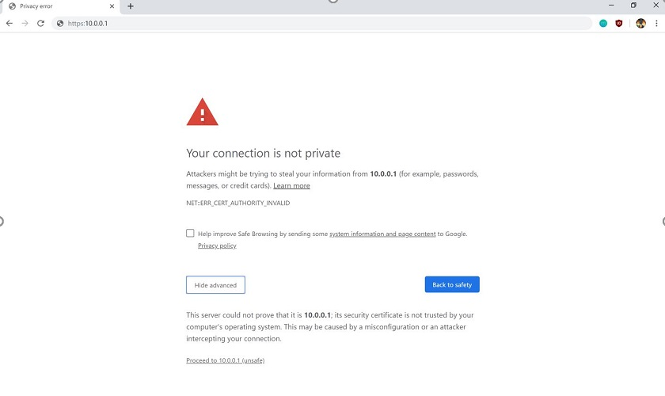From here you can then download and install Ciscos ASDM which will let you control the ASA through a GUI. (The version of your ASDM will depends on what comes preloaded with your ASA). You will need java downloaded to run the ASA. Before we can launch and run the ASDM we have to download a copy of the ASAs digital certificate to put into java or else it will not launch. (Downloading the certificate will vary depending on what browser you use). Once you have downloaded the digital certificate search “configure java” and go to the security tab. From here edit the site list and put in the IP of the ASA which you used to connect and download the ASDM.
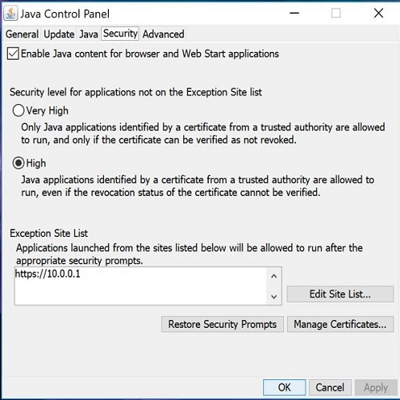Select the “manage Certificates” option and then import the certificate you just downloaded into “trusted certificates” and “secure sites”. You can then run the ASDM and connect to the IP address you used to download the ASDM. By default unless you have set it up the ASA has no username and password.
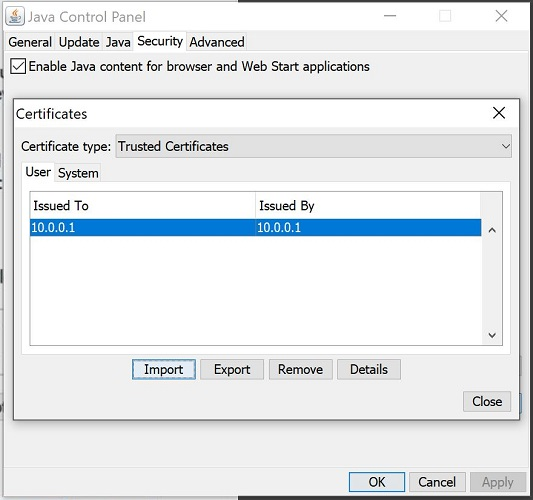Congratulations you have set up your ASA and now should be able to configure it further VIA ASDM
Configuring ASA Interfaces.
Once you have your ASDM open in order to start configuring our Interfaces we will go to Configuration > Device Setup > interface Seeting > Interfaces. (Note: In this example I had already configured my interfaces so when configuring your interface it might look a bit different from mine. This will also change based on which ASDM version you are running and the patch level running on your ASA.)
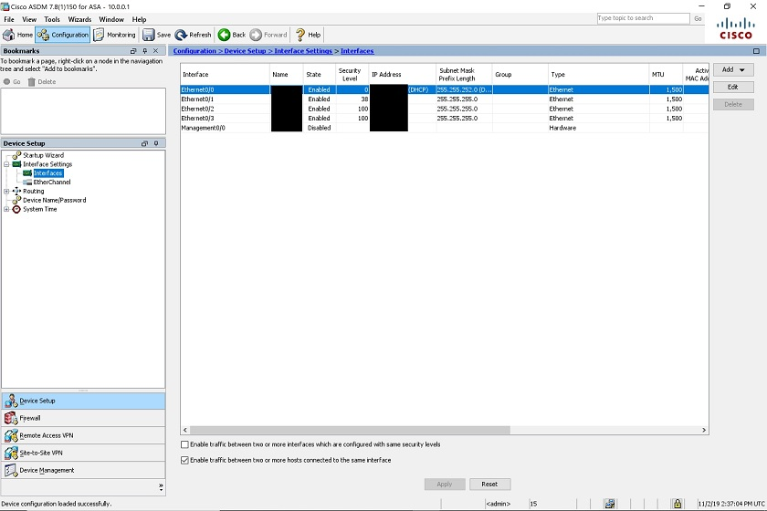In order set up connection to the internet we will need to make a port for it. (Note: Some interfaces come with one preconfigured for this). First will start by selecting add to bring up the configuration window. For the hardware port you will select the interface you wish to use to connect to the internet and you will want to give it a name. For the security level we will set it to 0 but you can set it to any number 0-100 so long as it is a lower level than all your other ports. By default traffic from your interfaces are able to travel from a higher level to a lower level but lower levels can travel to higher levels unless you specifically put in an access list for it. You will want to make sure to check off the "enable interface" box to make sure its on and bellow where it says "IP Address" will want to select "Obtain Address via DHCP". Since my ASA is hooked dirrectly to the cable modem I recieve a public assigned DHCP address from my service provider. (Note: You might have to reset your modem.) Check off Use "Cisco", "Obtain default route using DHCP", and set the "DHCP learned route MEtric" to 1. Once you have done those steps you can select "Okay".
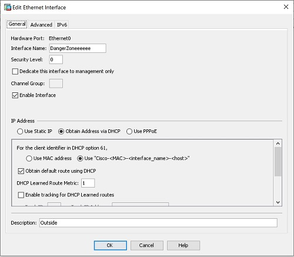The next interface will setup is the interface we will use for our raspberry pie/web server. For the first half we will set it up the similar to the way we set up the outside ineterface but instead of checking off "obtain address via DHCP" we will check off "use static IP". You will then assign an IP address (One from the range of private IPs), set your subnet mask and click ok.
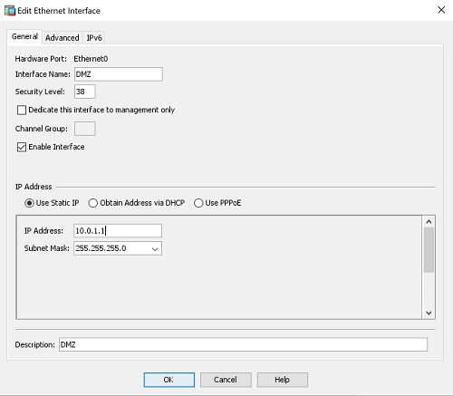You will now have 3 interfaces configured and you can select apply and save.
Static IP for your Pie
This was the youtube tutorial I used in order to setup a static IP on my Raspberry pie using the command line interface. You will want to make sure you set the IP to a host that resides in the subnet of your DMZ and set the default gateway of the IP for this interface too. Finally of course connect it to the interface you configured for your Raspberry Pie.
Setting up your Web Server (Apache)
In this video you will want to watch up to the 3 minute mark in order see how you set up your Apache web server.
Since we are using the GUI version of linux we can replace the files easier. By typing "sudo pcmanfm" in the consol it will give us a window that has administrative rights to edit permsions of files.
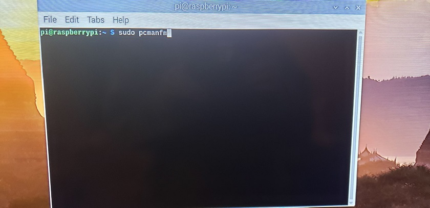Once the window is open navigate to var > www > html and in this folder is where you will place the web files.
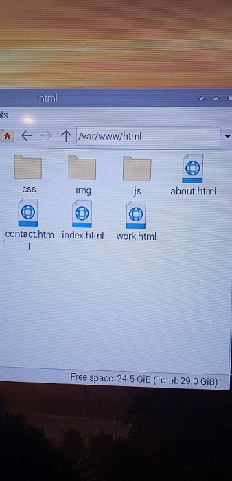Connecting Inside -> Outside (PAT)
In order to establish network connectivity from our inside interface to the outside we need to configure NAT (Network Address Translation) or in this case PAT (Port address translation). This can be done by going to “NAT Rules” under the configuration tab of the ASDM.
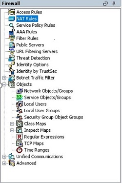Towards the top you will see an Add button then select Add “Network Object” NAT Rule from the drop down menu
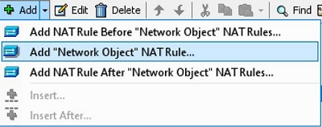From here you will give the Network Object a name and change the type to “Network. You will want to use the ip address and mask of the inside interface. The description is optional but recommended. In the lower section you will want to change the type to “Dynamic PAT (Hide) and set the translated address to the outside interface.
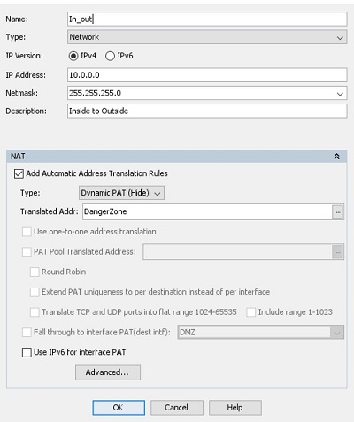Once done click ok and apply. As always make sure to save your changes.
Port forwarding
To allow connections from the outside to the raspberry pie we need to set up port forwarding. In order to do this we start by going to NAT rules on our ASA and clicking add, add "Network Object" NAT rule just like what we did for creating our inside to out NAT rule.
Will add a name and leave the type as “host”. For the IP address will add the internal IP address of the raspberry pies Static IP address. For the bottom area bellow “NAT” will leave the type as “static” and then select the outside interface for the translated address. At the very bottom you will want to then click the “advanced” button
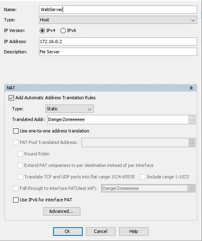The source interface is going to be inside, and the destination will be outside. You will leave the protocol as TCP and change the real and mapped port to http. Finally click ok then ok again and apply.
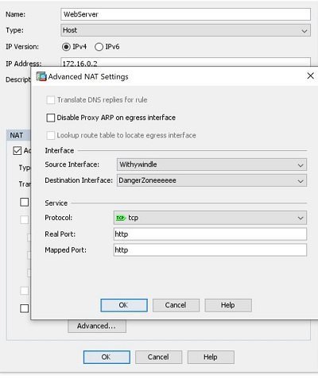For the last part we are going to go to “access rules” and then “add”. (In this example I had already added the access list). Will want to select the outside interface and make sure the action is set to “permit”. Source will be any and the destination will be whatever named you used before when setting up NAT. The service will be http and then you’ll select ok than apply.
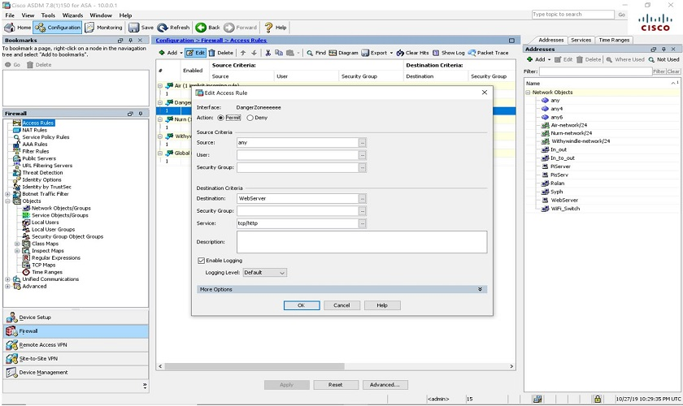Now anyone who visits the IP of your outside interface using a web browser will be forwarded to your website.
Dynamic DNS setup
To Set up Dynamic DNS that updates every hour I used this video starting from the 37 minute mark.
Conclusion
This is a bare minimum on how to host a website on a raspberry pie through an ASA. There is always more you can do like adding an IPS modual (Highly recomend) for increased security or a syslog server for logging network network access and other events. You can also try out other things like creating a radius or LDAP server on a pie for remote access to things like a NAS setup. Try different things and keep on rolan